BlendReal® - Cinematic Pipeline UE5
1.Why Choose BlendReal?

🔶 Free Updates — One-time purchase includes all future updates at no extra cost (new features, improvements, and bug fixes).
🔶 Technical Support — Direct help with installation issues, unexpected behavior, workflow problems, or Blender → Unreal integration.
🔶 Official Releases — Always receive the official version maintained and distributed by the developer.
🔶 Complete Documentation — Full documentation covering installation, setup, usage, troubleshooting, and FAQs.
🔶 Continuous Development — Your purchase helps fund ongoing development, testing, and optimization of the product.
🔶 Your Feedback Matters — Report bugs, suggest improvements, or request features. User feedback directly influences future development priorities.
🔶 One Purchase, Ongoing Value — You’re not just buying a file. Your license includes the product, updates, documentation, and support throughout the continued development of BlendReal®.
2.BlendReal® - Cinematic Pipeline UE5

✦Automated Blender → Unreal Engine 5 Cinematic Pipeline
✦13 Steps. 3 Integrated Systems. 1 Complete Pipeline.📌 BlendReal® transforms the Blender → Unreal Engine 5 process into a step-by-step guided workflow, taking you from a Blender Scene to a cinematic-ready Unreal Engine Scene without requiring you to master complex technical setups in Unreal Engine.
📌 13-Step Guided Workflow — BlendReal® guides you through every step, from configuring Remote Execution, Movie Render Queue, creating PBR/Glass Master Materials, setting up the Master Sequence, exporting Meshes & Animation, configuring Camera, FPS, Draw Distance, Two Sided, all the way to VDB export and setup. You don't need to memorize countless settings or search for individual steps in UE.
📌 More than just an Export tool. BlendReal® is a pipeline consisting of 3 integrated systems that communicate with each other
▣ Blender → Unreal Pipeline— Export, Camera, Animation, Materials, Sequencer
▣ UDS — Cinematic Sky & Lighting— Sky, Time of Day, Lighting, Fog & Presets
▣ VDB — Cinematic Volume— VDB, SVT, Volume, Materials & Lighting📌 From a single Sidebar (N-panel) in Blender, BlendReal® automates tasks that would normally require manual setup in UE: FBX, Camera, Animation, Materials, Sequencer, Sky, Lighting, VDB, and Movie Render Queue.
📌 You don't need to be an Unreal Engine expert. If you already have Blender skills and only basic Unreal Engine knowledge, BlendReal® provides a clear workflow to guide you step by step from bringing your scene into UE to setting up a cinematic render.
📌 For experienced Unreal Engine users, BlendReal® helps eliminate repetitive tasks, batch processing, and manual setup — especially useful for Wide Shot / Extreme Wide Shot scenes with multiple meshes, cameras, animations, lighting, and VDBs.
📌 13 Steps. 3 Integrated Systems. 1 Complete Blender → Unreal Pipeline.
📌 From Blender Scene to Cinematic Render — Without the Complex Setup.
3.What's new?

V1.0.1
🔷 BlendReal - Main Pipeline
- Batch export FBX Animation or static FBX, automatically apply Nanite Settings — including PBR Textures
- Create Cameras with Track To Constraint, automatically bake Camera + Animation, and use Restore Baked Constraint to adjust camera movement at any time
- Transfer Camera Animation from Blender to Unreal Engine
- Bake animation for FBX with Constraints (Track To, Follow Path, Damped Track, etc.) with a single click, with the option to restore the original animation
- Create PBR Master Material and Glass Master Material, ready to use in UE
- Built-in setup guide for connecting the Blender project to the UE project folder
- Batch rename Meshes, automatically categorize or use custom names with sequential numbering, with a single click
- Batch Apply Rotation (preserving Location + Scale)
- Batch Apply Scale (preserving Location + Rotation)
- Batch Recalculate Normals per UV Island (radial outward)
- Automatically create a Sequencer for actors with animation
- Automatically create and manage dedicated Mesh, Camera, and VDB folders in the UE Outliner
- Batch export Niagara System Trail values and import them into UE with a single click: this feature requires the BlendReal_SpaceshipTraffic add-on
- 1-click batch setup: Filmback/Sensor, Focal Length for all CineCameraActors, Master Sequence FPS, Max Draw Distance, Force Always Loaded to prevent World Partition culling during rendering, Motion Blur, Exposure, and Emissive brightness
🔷 UDS - Ultra Dynamic Sky Control
- 13 built-in cinematic sky presets (Golden Hour, Overcast, Night, Blue Moon, Dust Storm, etc.) — instantly choose a ready-made mood
- Complete Cinematic Setup: light color temperature, intensity, volumetric scattering, shadow distance, fog density, and fog falloff
- Synchronize Ultra Dynamic Sky with Blender's Directional Light — light color/rotation
- Save/load/back up your custom presets
- Export sky parameters to the UE project as JSON, import them back from UE into Blender, or apply them directly via Remote Execution
🔷 VDB - Volume Pipeline
- 3-step workflow: Load VDB into Blender → Send VDB Files to UE Project (copy frames + write a transform manifest) → Place VDB in UE Scene via Remote Execution — automatically convert to SVT (Sparse Volume Texture), create a Material Instance, spawn a Heterogeneous Volume actor, and automatically assign Material/Animation/Transform
- Supports both full VDB animation sequences and a single static frame
- VDB Fill Light — dedicated Directional Light for illuminating VDBs without affecting the environment
- VDB Shadow Light — dedicated Directional Light for casting VDB shadows onto the ground without interfering with UDS Sun/Moon shadows
- Point Light follows VDB, with true two-way synchronization with UE — reads Intensity/Location animation directly from the UE Sequencer into Blender
- Apply Flicker to Light — fire/explosion flickering effect using a Noise Modifier (Scale/Strength/Depth) combined with an uneven Auto-ramp (fast rise, slow fall)
- Create Material Presets: 🔥 Fire / 💨 Smoke / ☁️ Cloud — Density/Albedo/Blackbody/Temperature (Kelvin) parameters tuned for physically accurate fire color
- Cinematic Setup — quick setup dialog for Console Variables (Heterogeneous Volumes render quality), DirectionalLight, VDB Material, ExponentialHeightFog — automatically warns of conflicts with the UDS Sky/Fog system
- Diagnose Sequencer Bindings (read-only) + Clean Orphaned Bindings — clean up orphaned data if UE crashes during Place VDB
- Save/load/delete custom presets for Cinematic Setup, Material, and Point Light
4.System Requirements

- Operating System: Windows 10/11 64-bit
- Blender: 4.5, 5.0, or 5.2 (LTS)
- Unreal Engine: UE 5.6+, 5.7+, or 5.8+. However, VDB shadow functionality may not work correctly in UE 5.6 and 5.7, and shadows may be missing. UE 5.8+ provides proper VDB shadow support for both static VDBs and VDB animation sequences.
- Remote Execution features (directly applying Materials, Sky, Camera, etc. to UE) require Python Remote Execution to be enabled in the UE project (
Edit > Project Settings > Plugins > Python). BlendReal® includes a built-in setup guide, so you don't need to configure it manually.
5.Installation

- In Blender, go to Edit > Preferences > Add-ons
- Click Install from Disk... and select the downloaded
.zipfile- Check the box next to BlendReal® - Pipeline UE5 in the Add-ons list to enable the add-on
- Open the Sidebar in the 3D Viewport (press
N) and find the BlendReal® tab- If Blender reports that the add-on is incompatible, check that your installed Blender version is included in the supported versions listed under System Requirements


6.Updating to a New Version

- Before updating, back up your Presets and personal configuration.
- Remove the current version from Preferences > Add-ons → expand BlendReal® → click Remove.
- Install the latest
.zipfile following the installation steps above, then restart Blender.
7.Features - 3 Tools, 1 Sidebar Tab

🔷 BlendReal - Main Pipeline
- Batch Export FBX:
🔸With Animation via Sequencer or static FBX, with automatic Nanite Settings applied on import (Enable Nanite Support, Explicit Tangents, Lerp UVs, Shape Preservation = Preserve Area, Preserve Area for Opacity) and Apply Two Sided — all in one click.
🔸With full PBR Texture support (Base Color, Metallic, Roughness, Normal, Specular, Emission, Alpha, Ambient Occlusion).
🔸There are 3 Export workflows:
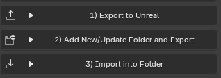
◇ Export to Unreal: Used for small projects when you want UE to automatically create a BlenderExports folder containing assets exported from Blender and imported into UE.
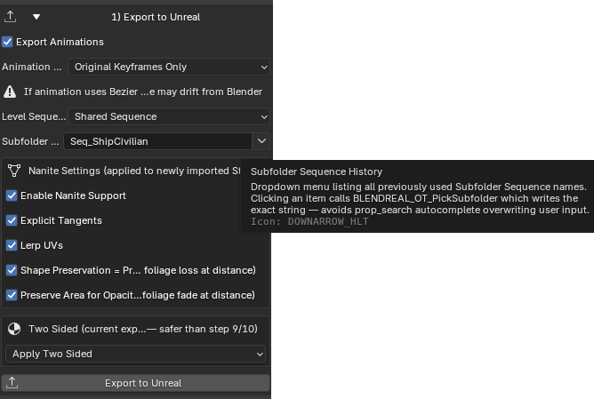
◇ Add New/Update Folder and Export: Most commonly used when you want to clearly organize and manage multiple scenes/shots within a project.
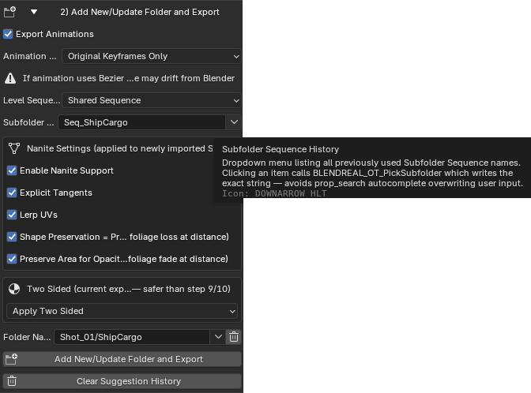
◇ Import into Folder: Used when a folder already exists in UE and you want to export additional assets directly into that folder.
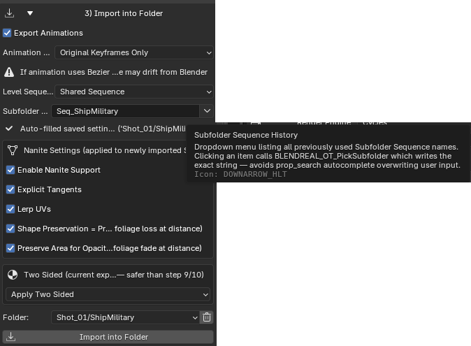
- Create a Camera with a Track To Constraint in one click, automatically bake the Camera + Animation before export — with Restore Baked Constraint to restore the original constraint and adjust the camera movement at any time. Transfer Camera Animation from Blender to Unreal Engine
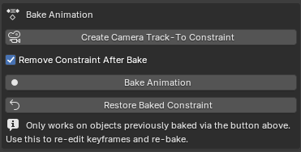
- Bake animation for meshes with Constraints (Track To, Follow Path, Damped Track, etc.) with a single click, with the option to restore the original animation.
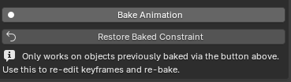
- Automatically create PBR Master Material and Glass Master Material, ready to use in UE
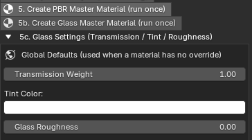
- Batch rename Meshes, automatically categorize them by Island/Building/Landscape or a custom name with sequential numbering, with a single click
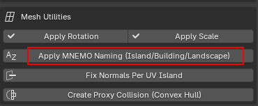
- Batch Apply Rotation (preserving Location + Scale)
- Batch Apply Scale (preserving Location + Rotation)
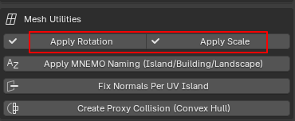
- Batch Recalculate Normals per UV Island (radial outward) — more precise than standard Recalculate Normals
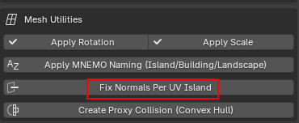
- Automatically create a Sequencer for actors with animation
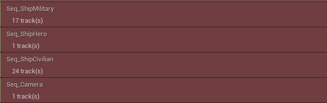
- Automatically create dedicated Mesh, Camera, and VDB folders in the UE Outliner and organize the corresponding actors automatically.
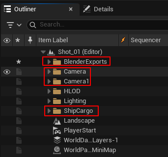
- Batch export Niagara System Trail values and import them into UE with a single click. This feature requires the BlendReal_SpaceshipTraffic add-on
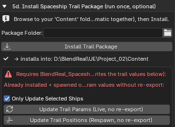
- 1-click batch setup: Filmback/Sensor (16:9 or 9:16), Focal Length for all CineCameraActors, Master Sequence FPS, Max Draw Distance (with Force Always Loaded to prevent World Partition culling during rendering), Motion Blur, Exposure, and Emissive brightness
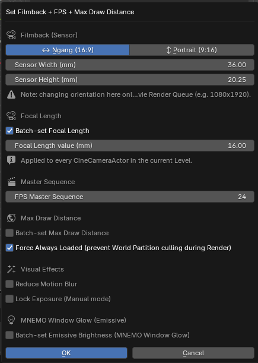
🔷 UDS - Ultra Dynamic Sky Control
- 13 built-in cinematic sky presets (Golden Hour, Overcast, Night, Blue Moon, Dust Storm, etc.) — instantly choose a ready-made mood
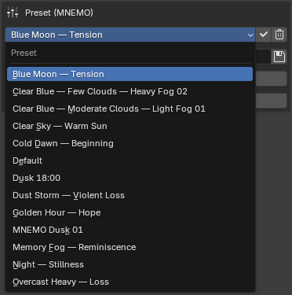
- Complete Cinematic Setup: light color temperature, intensity, volumetric scattering, shadow distance, fog density, and fog falloff

- Save, load, and back up your custom presets

- Automatically export sky parameters to the UE project as JSON, import them back from UE into Blender, or apply them directly via Remote Execution

🔷 VDB - Pipeline Volume
- Quy trình 3 bước: Load VDB vào Blender → Send VDB Files sang UE Project (copy frame + ghi kèm transform manifest) → Place VDB in UE Scene qua Remote Execution — tự convert sang SVT (Sparse Volume Texture), tạo Material Instance, spawn Heterogeneous Volume actor, gán Material/Animation/Transform tự động

- Hỗ trợ cả VDB dạng chuỗi animation đầy đủ và 1 frame tĩnh

- VDB Fill Light — Directional Light riêng chuyên chiếu sáng VDB mà không chiếu sáng môi trường xung quanh, cường độ tự nội suy theo đường cong Ngày/Đêm bám Time of Day của Ultra Dynamic Sky (hoặc override thủ công)

- VDB Shadow Light — Directional Light riêng đổ bóng VDB xuống mặt đất mà không đổ bóng môi trường xung quanh, không xung đột với bóng Sun/Moon của UDS

- Point Light bám theo VDB, đồng bộ 2 chiều thật với UE — đọc animation Intensity/Location trực tiếp từ UE Sequencer về Blender

- Apply Flicker to Light — hiệu ứng nhấp nháy lửa/nổ bằng Noise Modifier (Scale/Strength/Depth) kết hợp Auto-ramp không đều (lên nhanh, tắt chậm)

- Bạn hãy tạo preset vật liệu cho riêng mình: 🔥 Fire / 💨 Smoke / ☁️ Cloud — tham số Density/Albedo/Blackbody/Temperature (Kelvin) tinh chỉnh theo chuẩn vật lý màu lửa thật

- Cinematic Setup — dialog thiết lập nhanh cho Console Variables (chất lượng render Heterogeneous Volumes), DirectionalLight, Material VDB, ExponentialHeightFog — tự cảnh báo nếu xung đột với hệ Sky/Fog của UDS

- Diagnose Sequencer Bindings (chỉ đọc) + Clean Orphaned Bindings — dọn dữ liệu rác nếu UE crash giữa lúc Place VDB
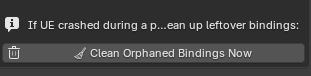
- Lưu/tải/xoá preset riêng cho Cinematic Setup, Material, Point Light
8.License & Source Code

- You should have received a copy of the GNU General Public License along with this program. If not, see http://www.gnu.org/licenses/.
- Gói cài đặt bao gồm các file py được đóng gói zip
9.Support

Mọi câu hỏi/yêu cầu cập nhật, liên hệ qua kênh Discord Support của BlendReal®.
10.FAQ

✅ Addon có cần Unreal Engine để sử dụng không?
Không phải tất cả tính năng đều yêu cầu Unreal Engine. Một số tính năng có thể được sử dụng trực tiếp trong Blender. Các tính năng sử dụng Remote Execution để áp dụng trực tiếp Material, Sky, Camera và các thiết lập khác vào Unreal Engine yêu cầu Unreal Engine đang mở project và đã bật Remote Execution bằng nút bấm tự động cài trên UI addon.

✅ Addon có tự động cập nhật khi Blender ra bản mới không?
Không. Khi có phiên bản Blender mới nằm ngoài danh sách phiên bản được hỗ trợ, bản addon tương thích sẽ được phát hành thông qua cùng link mua của bạn. Bạn có thể tải xuống phiên bản mới khi addon được cập nhật.
✅ Addon có hỗ trợ tất cả phiên bản Blender không?
Không. Addon chỉ hỗ trợ các phiên bản Blender được liệt kê trong phần Yêu cầu hệ thống của sản phẩm. Các phiên bản Blender mới hơn sẽ được hỗ trợ khi bản addon tương thích được phát hành.
✅ Có giới hạn số máy cài đặt không?
License được tính theo Seat (người dùng), không phải số lượng máy cài đặt. Một Seat dành cho một người dùng và không được chia sẻ cho người khác. Người dùng có thể cài đặt addon trên các máy cá nhân của mình để phục vụ công việc
✅ Tôi có được cập nhật addon sau khi mua không?
Có. Các bản cập nhật và bản sửa lỗi tương thích sẽ được cung cấp cho người dùng đã mua addon thông qua trang sản phẩm.
✅ Tôi có phải trả phí cho các bản cập nhật không?
Không. Các bản cập nhật và bản sửa lỗi được phát hành cho phiên bản sản phẩm hiện tại sẽ được cung cấp miễn phí cho khách hàng đã mua. Nếu giá sản phẩm được điều chỉnh trong tương lai, mức giá mới chỉ áp dụng cho các giao dịch mua mới và không ảnh hưởng đến những khách hàng đã mua trước đó
✅ Làm sao để biết khi nào có bản cập nhật mới?
Các bản cập nhật sẽ được phát hành trên trang sản phẩm. Bạn chỉ cần truy cập lại link mua sản phẩm để kiểm tra và tải xuống phiên bản mới nhất
✅ Làm thế nào để cập nhật addon?
Trước khi cập nhật, bạn nên sao lưu các Preset và cấu hình cá nhân. Sau đó, gỡ phiên bản hiện tại của addon và cài đặt phiên bản mới nhất từ trang sản phẩm
11.What You Can Create